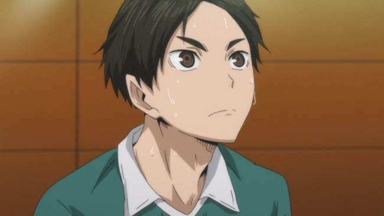
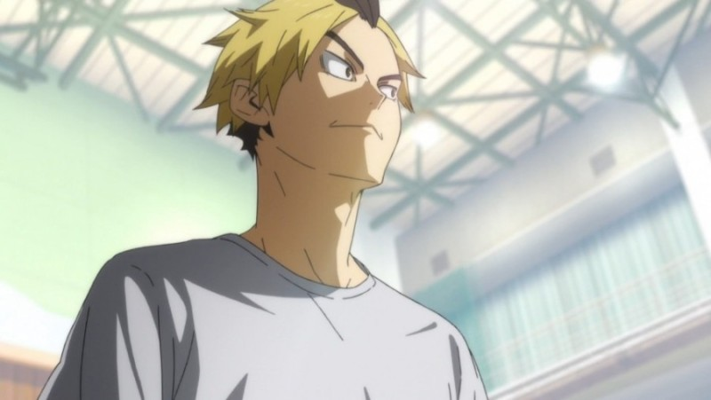
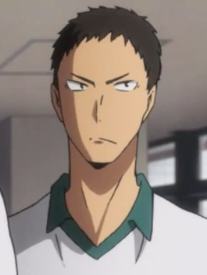
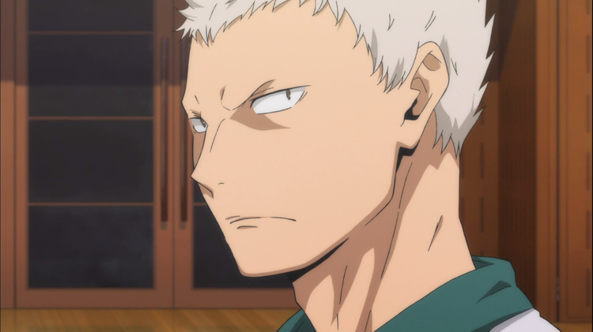
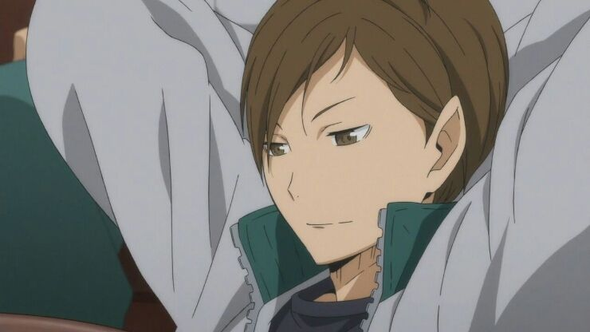
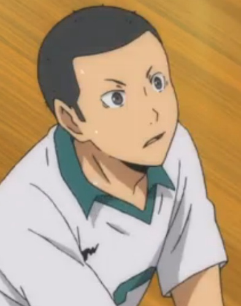
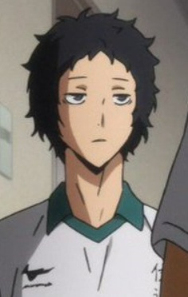
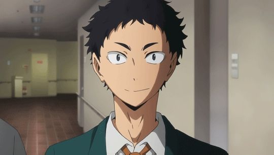
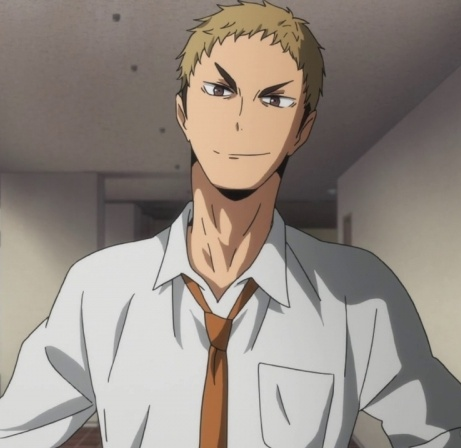
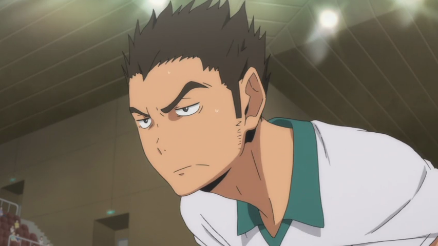

모니와가 은퇴한 이후로는 철없는 선배와 세터계의 신생아를 돌보는 다테공의 엄마 역할을 하고 있으며, 코가네가와의 말로는 다테의 토대같은 존재라고. 본인이 말하기를, 초등학생 때 배구를 시작했고 모든 면에서 부족한 자신이 유일하게 잘 할 수 있는 것은 리시브라고 한다.다테 공고 팀 안에서 가장 키가 작다. 하이큐 전체 등장인물을 통틀어봐도 키가 최하위권이다. 특히나 다테 공고 선수들은 평균키가 크기 때문에 단체컷이나 키가 큰 팀원들 옆에 서있으면 머리밖에 나오지 않는 경우도 종종 있다.
기운 넘치고 의욕도 넘치는 열혈바보면서 눈새 기질을 겸비했다.마냥 순한 것 같지만 작가가 그린 단행본 15권 홍보 카키오로시에서는 쿄타니와 신경전을 벌이는 성깔도 있다.1학년이면서도 포지션 대비 상당한 장신으로 신체 조건이 워낙 좋다. 세터가 191cm이면 거의 세계무대에서도 밀리지 않는 수준. 그러다 보니 공중에서 공을 잘 낚아채고, 힘도 좋아서 스파이크도 강력하다. 투어택을 할 때도 페인트 동작 없이 바로 후려갈기는데 상대 선수들이 미리 알아채고도 그 파워 때문에 못 막을 정도.
선배 미들 블로커 카마사키가 은퇴하고 후임으로서 봄고부터 주전에 합류했다. 그런데 카마사키와 비교하면 능력치가 많이 낮다. 그나마 두뇌 능력치는 다테공에서 공동으로 제일 높다.모든 사람을 성으로 부르는 코가네가와가 유일하게 이름으로 부르는 인물이다. 이에 대한 이유는 알려지지 않았다.애니 2기에서 출연했는데 대사가 없어서 성우가 붙지 않았다
과묵하고 표정이 거의 없는 백발의 선수. 눈썹이 없어 카라스노 선수들에게서는 '마유나시'로 불렸다. 극단적으로 말이 없으며, 상대팀 에이스에게 '록 온'을 하는 버릇이 있어, 1기 15화에서 카라스노의 에이스인 아즈마네에게 록 온을 하다 전 주장인 모니와를 곤란하게 만들었다. 아오네의 팔을 잡고 끙끙거리는 모니와가 후타쿠치에게 도움을 청한 덕에 그나마 상황이 쉽게 정리될 수 있었다.배구부 부원들 중 전 주장이었던 모니와의 말을 잘 따른다말 수가 극단적으로 적어 거의 눈빛으로만 대화하는데, 신기하게도 후타쿠치는 대부분 다 알아듣는다.
같은 팀원들까지 가리지 않고 어그로를 끄는 성격이지만, 컴플리트 가이드북 배구본에서 '사실은 누구보다 선배와 팀을 생각하며, 성격 탓에 잘 표현을 못할 뿐이다.'라고 적혀있다.아오네의 포스에 밀려 잘 드러나지 않는 사실이지만 후타쿠치 역시 실력이 출중하다. 철벽으로 불리는 다테공 안에서 블로킹 실력도 아주 좋은 편이며 실제로도 아오네와 함께 블로킹의 중심을 맡고 있다. 키나 점프력 같은 조건 역시 받쳐주며 다테공의 에이스로써 스파이크와, 오이키와의 서브도 쉽게 올리는 등 리시브 실력도 뛰어나다.
후타쿠치의 따까리(?) 역할을 맡고 있다. 하이큐!! 소설판!! 4권에서 후타쿠치에게 3학년이 돌아오길 바라냐고 물었다가 후타쿠치에게 킥을 맞았고(...), 만화책 26권 228화에서 타나카와 기싸움을 하려는 후타쿠치를 말렸다.공식 홈페이지에 나온 캐릭터 소개에 추가 설정이 적혀있다.# '솔직히 그림자가 엷다. 아오네, 후타쿠치와 같은 독특한 동급생에 둘러싸여, 본인도 넌지시 자각이 있는 모양.' 즉 공식에서 인정한 공기 캐릭터
선배 윙 스파이커 사사야가 은퇴하고 후임으로서 봄고부터 주전에 합류했다. 작중에서 공격은 전혀 한 적 없고 리시브하는 모습만 보였다.별명이 판타롱인 이유는 만화책 프로필 일러스트에서 나팔바지를 입고 기묘한 포즈로 등장했기 때문인 듯하다.
인터하이 시점 다테공 팀의 주장. 유순한 성격 탓에 골치아픈 후배들에게 잘 휘둘린다. 잘 휘둘리는 면과는 달리 주장다운 관록도 보여주며 철벽의 명칭에 지지 않도록 노력하고 있다. 인망이 두텁고 팀을 하나로 만드는 부드러운 리더십이 있어 멤버들에게 존경받고 있다. 무뚝뚝한 아오네도 모니와의 말은 잘 듣는 편이며, 모니와가 은퇴한 뒤 후타쿠치의 '모니와 선배의 고마움은 예전부터 알고 있었다'라는 대사를 보면 잘 드러나지 않았지만 다테공의 모두가 모니와를 의지하고 있었음을 알 수 있다.
성격은 마초적이고 의리가 두텁다. 다만 다혈질이라서 마냥 소심한 모니와, 항상 차분한 사사야에 비해서 다혈질인 성격 탓에 후타쿠치가 놀려먹기 제일 좋아한다. 후배들에게 잔소리를 많이 하지만 공식 가이드북에는 이게 누구보다도 후배를 생각하는 증거라고 적혀있다.공식 가이드북에서 근육에서 만들어지는 파워는 팀 내 최고라고 적혀있다. 그러니까 다테공의 카마사키, 아오네 둘 다 파워가 5로 최대치지만 의외로 카마사키가 아오네보다 힘이 더 세다. 후배들의 그늘에 가려지기 쉽지만 카마사키도 블로킹 실력은 이들에게 뒤지지 않는다.
공식 홈페이지에 나온 캐릭터 소개에 다음과 같이 적혀있다.# '같은 3학년인 모니와와 달리, 묵직이 지은 그 모습은 관록이 충분하다.' 이 설명처럼 작중에서 후배들에게 쩔쩔매는 모니와, 다혈질이라 후타쿠치의 도발에 쉽게 열 올리는 카마사키와는 달리 항상 침착하고 어른스럽다.카마사키가 거친 행동을 하려고 할 때마다 옆에서 제어하는 역할을 맡는다.인터하이 직후 다른 3학년들과 함께 은퇴했고 이후 봄고 다테공의 세이죠 전을 관람하러 왔다. 카라스노 배구부 멤버들을 바라보는 카마사키의 태도가 불량하자 손으로 카마사키의 얼굴을 잡았다.
